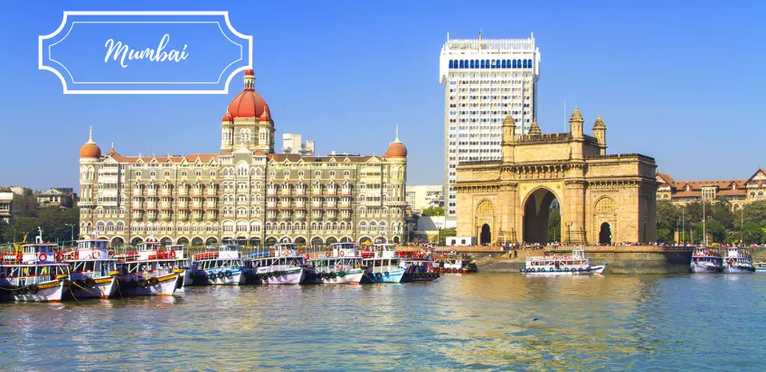

Mumbai, the city of dreams, offers a unique blend of history, culture, and modernity. From the iconic Gateway of India to the bustling streets of Colaba and the serene beaches, there's something for everyone in this vibrant city.

Explore Mumbai's rich history, indulge in its diverse cuisine, and experience the unparalleled
energy of this urban metropolis. Don't miss Marine Drive, also known as the Queen's Necklace,
especially at sunset!
Iconic Places to Visit and Eat